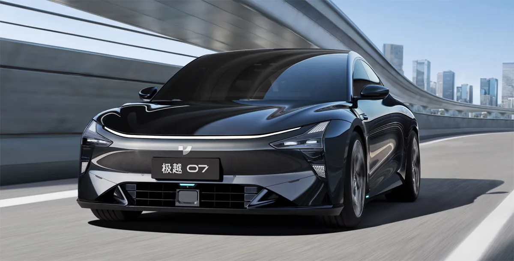
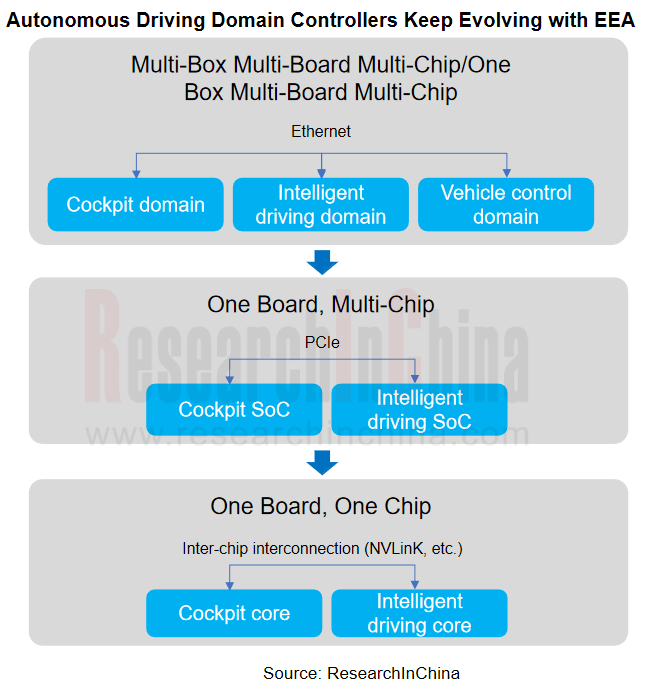

自動運転ドメインコントローラ調査: One Board / One Chipソリューションは自動車サプライチェーンに大きな影響を与える
ResearchInChinaによれば、中国市場の乗用車（輸出入を除く）では、2024年1月から9月までに、OEM純正のインテリジェントドライビング・ドメインコントローラが標準装備として225.4万セット搭載された。2023年以降、自動運転ドメインコントローラの普及率は月を追って急上昇しており、2024年9月には17.4%に達した。前年同月はわずか8.61%だった。
主要OEMにとって、自動運転ドメインコントローラの開発と適用は広く普及しており、次の段階では中央制御ユニット（CCU）へ進化していく。本レポートでは、自動運転ドメインコントローラの発展を3つの段階に分けている。
Multi-Boxソリューションでは、各ドメインコントローラが個別の回路基板を持ち、ドメイン間のデータはEthernet経由で伝送される。これは現在普及しているドメイン集中型E/Eアーキテクチャを反映したもので、技術が成熟し、コストを制御しやすい一方、Ethernetの伝送速度は限られる。多くは100から1000Mb/sである。
車内の異なるドメイン間でエンコードとデコードが不要になるため、エンコード・デコード用のチップ、電源、放熱、ワイヤーハーネスを削減でき、コスト低減につながる。チップ間のデータ伝送にはPCIeインターフェースが使われる。現在、車載システムではPCIe Gen 4が広く用いられており、16 GT/s、1レーンあたり1.97 Gb/sの転送速度を持つ。複数レーンを束ねることで、PCIe Gen 4の転送速度は一般に10Gb/s超となり、Ethernetよりはるかに高い。
この段階では、ボディドメインとゲートウェイ機能が統合され、NXP S32G、SemiDrive G9H、Renesas RH850などの中央ゲートウェイチップが搭載される。
ドメインコントローラSoCは、チップ内通信で相互接続された複数のIPコアを備える。将来の多くの高性能EVには、Transformer、大規模言語モデル（LLM）、生成AIワークロード向けに設計されたNVIDIA Blackwellアーキテクチャベースの次世代自動運転車（AV）プロセッサ、DRIVE Thorが搭載されるだろう。NVIDIAは次世代ThorにNVLink 5インターコネクト技術を搭載している。チップメモリ帯域幅は100Gb/sを超える。
全体として、ステージ1のMulti-Boardソリューションは基本的に実現済みである。NIOやXpengのような先進的な新興OEMはステージ2に入り、One Boardソリューションを量産・納入している。一部のOEMはステージ3、つまりOne Chipソリューションへ直接ジャンプする可能性がある。2025年はOne Chipソリューションが生まれる最初の年になると予想される。この過程では、一般にシャシーとパワードメインはOne Chipソリューションへ統合されない。主な理由は、サプライヤーが比較的クローズドなソリューションを提供しており、OEMに権限を付与する可能性が低いためである。
AI基盤モデルはOEM間競争の焦点である。高帯域幅能力を持つOne Chipソリューションにより、すべてのソフトウェアがデータと計算能力を共有でき、エンドツーエンド基盤モデルやLLMなどの実装を支援する。
さらに、One ChipソリューションはIPコアを自由に組み合わせる可能性を開き、チップレットアーキテクチャに基づいて設計されるチップは、今後10年の車載チップ発展における重要な方向性の一つになる。

2024年、業界はさらなるコスト削減圧力のもと、One BoardおよびOne Chipのインテリジェントドライビング・ドメインコントローラソリューションを急速に展開している。
One Board: ECARXは「One Board」ソリューションの設計において、中国国内の量産可能チップ戦略に重点を置いている。ハードウェア面では「1枚の基板と2つのチップ」というアーキテクチャ設計を採用し、中国国内の成熟した7nm車載グレードチップであるLongying No.1と、インテリジェントドライビングSoCであるHuashan A1000を2つのマスターSoCとして使い、PCIe経由で高速相互接続する。ソフトウェア面では、高度に標準化されモジュール化された「Cloudpeak」クロスドメインソフトウェアプラットフォームにより、機能ドメイン間の接続性と相互運用性を実現し、「One Board and Multi-Chip」ドメインコントローラおよび中央コンピューティングプラットフォームの量産を可能にしている。
その中で、2つのHuashan A1000チップを搭載したインテリジェントドライビング・コンピューティングプラットフォームであるECARX Skyland Proと、2つのLongying No.1チップを搭載したECARX Antora 1000 Proコンピューティングプラットフォームは、Lynk & Co. 08 EM-PおよびLynk & Co 07 EM-P向けに製品化・納入されている。
One Chip: ECARXは、中国初の7nm車載グレードSoC「Longying No.1」（8 TOPS）をベースに、「コックピット・駐車統合」のOne Chip製品を2つ開発した。「ECARX Antora 1000 Computing Platform（AI Enhanced Version）」と「ECARX Super Brain - Antora 1000 Plus Computing Platform」である。これら2製品は、それぞれGeely Galaxy E5とLynk & Co Z20に量産搭載されている。Galaxy E5はインテリジェンス面で高い評価を得ており、市場でも好調で、量産レベルで良好な市場フィードバックを受けている。
より統合度の高い「コックピット・運転・駐車統合」版は、L2 ADAS、自動駐車、主流のコックピット機能を含むコックピット・運転・駐車統合機能の開発を支援できる。費用対効果が非常に高く、2025年に車両へ搭載可能になる見込みである。ECARXは、より高度なコックピット・運転・駐車統合機能を支援するため、アップグレード版「Longying No.1 Pro」（56 TOPS）をベースとしたコックピット・運転・駐車統合ソリューションを開発する可能性があると報じられている。
IPU14: 2024年10月、Desay SVは次世代高性能インテリジェントドライビング・ドメインコントローラであるIPU14を初めて公開展示した。NVIDIAの最強クラスのインテリジェントドライビングチップであるThor-Uを搭載し、IPU14は1チップのコックピット・運転統合、L3条件付き自動運転、一部シナリオでのL4自動運転を支援する。
ICPS01E: 2024年10月、Desay SVとCheryが共同開発した「8775コックピット・運転統合中央コンピューティングプラットフォーム」が初公開された。共同開発の過程で、Cheryは車両リソースを提供し、Desay SVが具体的な製品開発を担当した。
2024年9月、Z-Oneは、Horizon Journey 6とQualcommの最新コックピットSoCをベースとする同社第2世代セントラルブレイン、ZXD2（Z-ONE X Device）のプロトタイプが起動したと正式に発表した。ZXD2は、インテリジェントドライビング、インテリジェントコックピット、インテリジェントコンピューティングなどのシステム横断統合を実現する。ZXD2はOne Boxのソフトウェア・ハードウェア統合設計も採用しており、コンピューティングプラットフォームの重量を40%削減し、体積を30%縮小し、計算能力とストレージ効率を30%向上させ、データ通信帯域幅を30倍に増やし、車両OTA更新時間を30分へ短縮する。
XpengやNIOなど一部のOEMは、「One Board and Multi-Chip」ドメインコントローラ・コンピューティングプラットフォームの量産を実現している。
XCCPはC-DCUとXPUを組み合わせ、インテリジェントドライビング、コックピット、クラスター、ゲートウェイ、IMU、パワーアンプなどの機能統合を可能にする。従来の中央コンピューティングアーキテクチャと比較して、XCCPはコストを40%削減し、性能を50%向上させる。Xpeng X9はコックピット・運転統合を実現している。同じ回路基板上の2つのチップ間通信はPCIeで行われ、その速度は最大10Gb/sである。
コックピット・運転統合ソリューションは、Qualcomm Snapdragon 8295インテリジェントコックピットチップと4つのNVIDIA Orin Xインテリジェントドライビングチップを含む。新しい中央コンピューティングプラットフォームは12,000個を超えるデバイスを統合し、高統合によって生じるPI/SI、EMC、熱に関する技術課題を解決している。コックピット・運転分離型ドメインコントローラと比べて、40%小型化し、20%軽量化している。
中央コンピューティングプラットフォームADAMは、車内の異なるドメイン間でエンコードとデコードを不要にし、エンコード・デコード用のチップ、電源、放熱、ワイヤーハーネスを削減できる。回路基板上のエッチング配線がギガビットEthernetを直接置き換え、インテリジェントドライビングドメインとコックピットドメイン間のデータ帯域幅はギガビットから16Gbpsへ大幅に増加し、転送速度は10倍以上向上する。
クロスドメイン計算能力共有により、インテリジェントドライビング、インテリジェントコックピット、車両制御に最大256 TOPSの計算能力を呼び出せる。クロスドメイン計算能力共有は、計算能力をインテリジェントドライビングドメインまたはインテリジェントコックピットドメインのどちらかに完全に限定するのではなく、より合理的に配分することも可能にする。
One Chipソリューションは「コックピット・運転統合」の究極形になる可能性があり、その利点は次の通りである。
One Chipソリューションにおける代表的なマルチドメインフュージョンSoCには、NVIDIA Drive Thor、Qualcomm Snapdragon Ride Flex SA8775およびSA8795、Black Sesame「Wudang」C1200、そして最新のRenesas R-Car X5が含まれる。
2024年11月、Renesasは車載グレード3nmプロセスを用いたマルチドメインフュージョンSoCファミリ、R-Car X5シリーズを業界で初めて発表した。単一チップでADAS、IVI、ゲートウェイアプリケーションなど複数の車両機能ドメインを同時に支援できる。このSoCは、チップレット技術を用いてAIおよびグラフィックス処理性能を拡張する選択肢を提供する。R-Car X5シリーズは2027年に量産予定である。
R-Car X5シリーズの主な特徴は次の通りである。
One Chipソリューションは、自動車ドメインコントローラのハードウェア、車両OS、車載SoCの設計と製造に大きな影響を及ぼすことが予見される。OEM、Tier 1サプライヤー、チップベンダーは、マルチドメインフュージョン、チップレット、チップ間インターコネクト（PCIe、NVLinkなど）といった新技術領域をめぐり、激しく競争することになる。